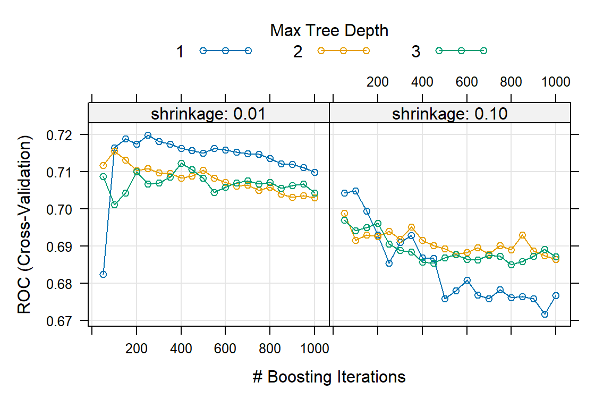
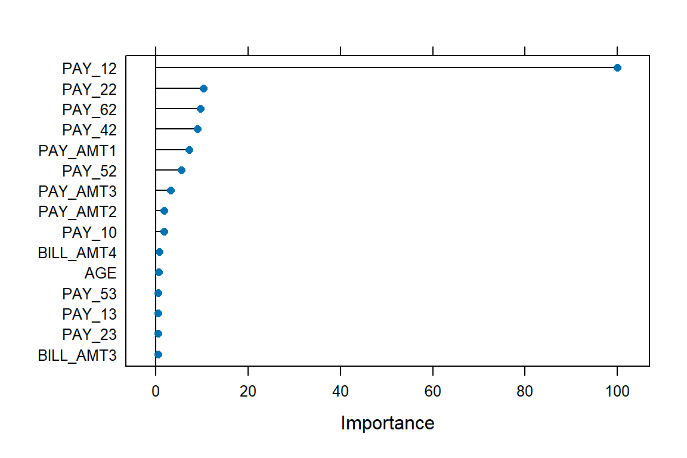
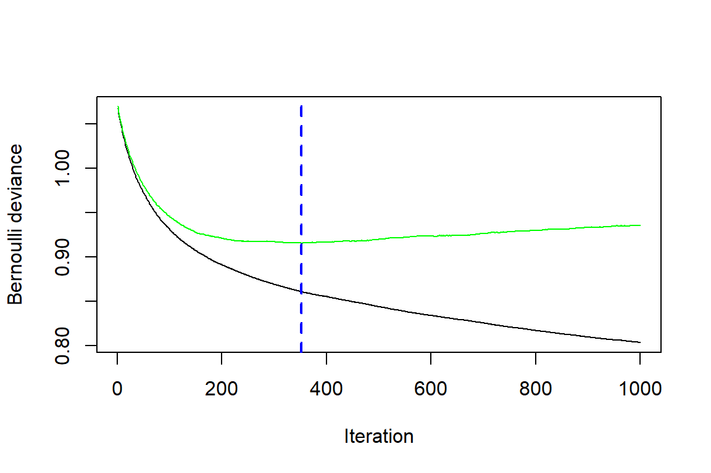
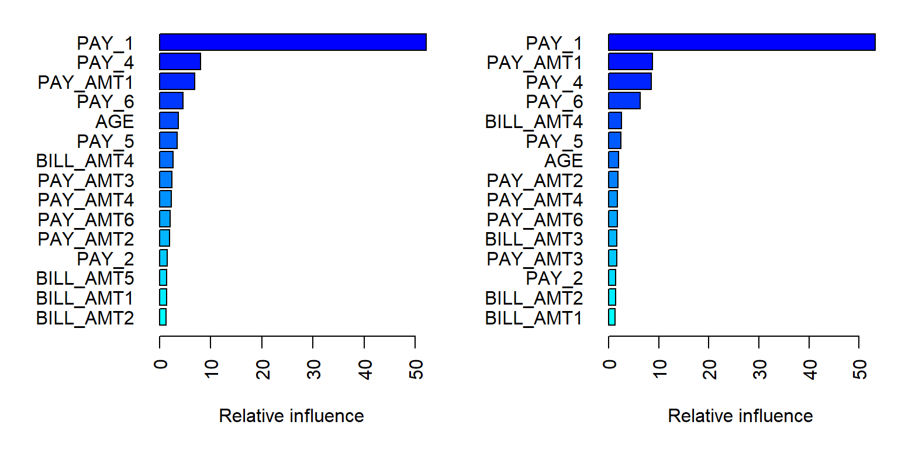
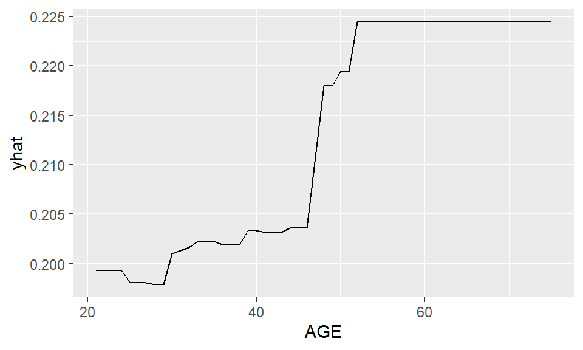
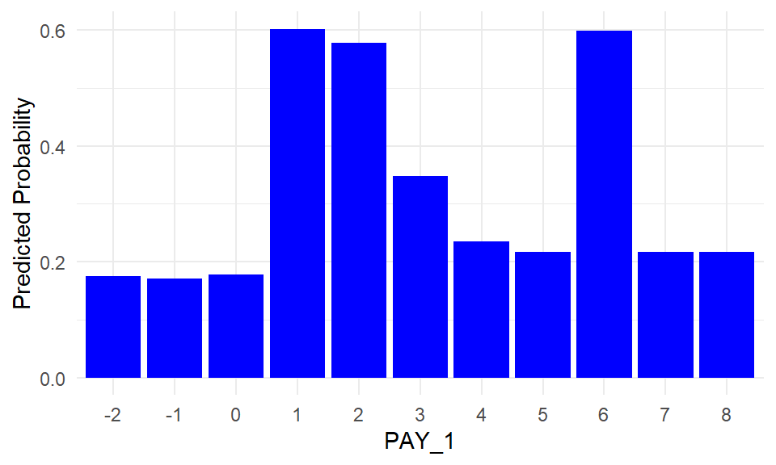

# Load packages
library(dplyr)
library(gbm)
library(caret)
library(pROC)
library(ROCR)
library(tidyr)
library(PRROC)
library(doParallel)
library(glmnet)
library(pdp)
library(ggplot2)
library(gridExtra)
# Load data
credit <- read.csv("credit.csv") %>% select(-X, -ID)
payamt_colsnames <- paste0("PAY_", 1:6)
credit <- credit %>%
mutate(across(c(EDUCATION, MARRIAGE, SEX, default, all_of(payamt_colsnames)), as.factor))
credit$default <- as.factor(ifelse(credit$default == 1, "Yes", "No"))
# Extract a sample to speed up computation
set.seed(310)
credit <- credit[sample(nrow(credit), size = 1000, replace = FALSE), ]
# Reproducibility
set.seed(123)
# Data splitting
index <- createDataPartition(credit$default, p = 0.7, list = FALSE)
train <- credit[index, ]
test <- credit[-index, ]Lab: Gradient Boosting Machine
Actuarial Data Science - Open Learning Resource
Learning Objectives
In this lab, we continue our exploration of the credit dataset, with a focus on fitting gradient boosting machines (GBM). We use the same illustrative subset of 1000 observations. However, you are encouraged to explore the full dataset or a larger sample for more comprehensive comparisons.
We guide you through the fundamental process of training and tuning gradient boosting machines using the
caretandgbmpackages in R.We examine interpretation tools, including feature importance and partial dependence plots, while also highlighting their limitations.
Gradient Boosting Machine
Gradient boosting machine (GBM) is the process of iteratively adding basis functions in a greedy fashion, so that each additional basis function further reduces the selected loss function. The main idea of boosting is to add new models to the ensemble sequentially. At each iteration, a new weak base learner is trained with respect to the error of the ensemble learned so far. Gradient boosting optimises an arbitrary differentiable loss function, such as squared error.
Gradient boosting differs from both bagging and random forest. Bagging uses equal weights for all learners included in the model, whereas boosting employs non-uniform weights. Random forests build an ensemble of deep independent trees, while GBMs build an ensemble of shallow, weak trees sequentially, with each tree learning from and improving upon the previous ones. When combined, these weak learners form a powerful ensemble that often achieves strong predictive performance.
The gbm R package is the original R implementation of gradient boosting machines.
Tuning a GBM
In the train function, the tuning parameters for the gbm method include:
Number of trees (
n.trees): The total number of trees to fit. GBMs often require many trees; however, unlike random forests, GBMs can overfit. The goal is to find the optimal number of trees that minimises the loss function of interest using cross-validation.Depth of trees (
interaction.depth): The number d of splits in each tree, which controls the complexity of the boosted ensemble. Often d = 1 works well, in which case each tree is a stump consisting of a single split. More commonly, d > 1, but typically d < 10 is sufficient.Learning rate (
shrinkage): Controls how quickly the algorithm proceeds down the gradient descent. Smaller values reduce the risk of overfitting but increase the time required to reach the optimal fit. This parameter is also referred to as the learning rate.Minimum terminal node size (
n.minobsinnode): An integer specifying the minimum number of observations in the terminal nodes of the trees.
In the original gbm package, you can also fine-tune:
- Subsampling (
bag.fraction): Controls the fraction of training observations used to fit each tree. Using a value less than 1 introduces randomness into the boosting process (known as stochastic gradient boosting), which can help reduce overfitting and improve generalisation. In contrast, standard GBM uses the full dataset for each tree (bag.fraction = 1). In thegbmpackage, the default isbag.fraction = 0.5, meaning that stochastic gradient boosting is used by default.
Training and Tuning with caret
# Define control parameters for model training
fitcontrol <- trainControl(
method = "cv",
number = 5,
savePredictions = TRUE,
classProbs = TRUE,
summaryFunction = twoClassSummary,
allowParallel = TRUE
)
# Fit GBM using default tuning grid
set.seed(515)
gbm1 <- train(
default ~ .,
data = train,
method = "gbm",
distribution = "bernoulli",
metric = "ROC",
trControl = fitcontrol,
verbose = FALSE
)
print(gbm1)Stochastic Gradient Boosting
701 samples
23 predictor
2 classes: 'No', 'Yes'
No pre-processing
Resampling: Cross-Validated (5 fold)
Summary of sample sizes: 561, 560, 561, 561, 561
Resampling results across tuning parameters:
interaction.depth n.trees ROC Sens Spec
1 50 0.7132251 0.9630989 0.2580645
1 100 0.7020809 0.9557255 0.2897177
1 150 0.6953663 0.9501699 0.2961694
2 50 0.7196405 0.9538906 0.2897177
2 100 0.7168283 0.9372749 0.3338710
2 150 0.7162165 0.9317193 0.3274194
3 50 0.6946928 0.9483011 0.2830645
3 100 0.6833573 0.9298675 0.2770161
3 150 0.6842283 0.9280326 0.2957661
Tuning parameter 'shrinkage' was held constant at a value of 0.1
Tuning parameter 'n.minobsinnode' was held constant at a value of 10
ROC was used to select the optimal model using the largest value.
The final values used for the model were n.trees = 50, interaction.depth =
2, shrinkage = 0.1 and n.minobsinnode = 10.# Class predictions
gbm1_pred <- predict(gbm1, newdata = test, type = "raw")
gbm1_conf <- confusionMatrix(gbm1_pred, test$default, positive = "Yes")
# Probability predictions
gbm1_probpred <- predict(gbm1, newdata = test, type = "prob")
gbm1_auc <- roc.curve(
scores.class0 = gbm1_probpred$Yes,
weights.class0 = as.numeric(test$default) - 1,
curve = TRUE
)
gbm1_auc$auc[1] 0.6919712From the output, we can see that caret uses a default tuning grid (i.e., interaction.depth and n.trees) when no specific grid is supplied. Next, we define our own tuning grid to explore a wider range of parameter combinations.
# Define tuning grid
parameters <- expand.grid(
n.trees = (1:20) * 50,
interaction.depth = c(1, 2, 3),
shrinkage = c(0.01, 0.1),
n.minobsinnode = 10
)
# Use parallel computing to speed up training
cl <- makeCluster(detectCores())
registerDoParallel(cl)
set.seed(385)
gbm_gridfit <- train(
default ~ .,
data = train,
method = "gbm",
distribution = "bernoulli",
metric = "ROC",
trControl = fitcontrol,
tuneGrid = parameters,
verbose = FALSE
)
stopCluster(cl)
#print(gbm_gridfit)
plot(gbm_gridfit)
Based on the five-fold cross-validation results, the selected tuning parameters are n.trees = 250, interaction.depth = 1, shrinkage = 0.01, and n.minobsinnode = 10.
The plot shows the relationship between the number of trees and shrinkage. In general, a smaller learning rate often requires a larger number of trees to achieve strong predictive performance, as measured by AUC in this case.
Exercise:
For further exploration, the code below provides an expanded grid of tuning parameters. Feel free to adjust and experiment with the code to observe any potential changes in the selected optimal values. For instance, you can also consider using a larger training sample to assess the impact of sample size on the optimal values.
# This code chunk will not be executed but will be displayed
# Expanded tuning grid
parameters <- expand.grid(
n.trees = (1:30) * 50,
interaction.depth = c(1, 3, 5, 7, 9),
shrinkage = c(0.01, 0.05, 0.1),
n.minobsinnode = c(3, 5, 10, 15)
)
set.seed(629)
cl <- makeCluster(detectCores())
registerDoParallel(cl)
gbm_gridfit2 <- train(
default ~ .,
data = train,
method = "gbm",
distribution = "bernoulli",
metric = "ROC",
trControl = fitcontrol,
tuneGrid = parameters,
verbose = FALSE
)
stopCluster(cl)
print(gbm_gridfit2)
plot(gbm_gridfit2)Using the provided code above without further modifications, the final model is trained as follows:
# Final model
set.seed(875)
fitControl_final <- trainControl(
method = "none",
classProbs = TRUE
)
gbm1_best <- train(
default ~ .,
data = train,
method = "gbm",
distribution = "bernoulli",
metric = "ROC",
trControl = fitControl_final,
# Only a single model can be passed to train() when no resampling is used
tuneGrid = data.frame(
interaction.depth = 1,
n.trees = 150,
shrinkage = 0.01,
n.minobsinnode = 5
),
verbose = FALSE
)
# Class predictions
gbm1_best_pred <- predict(gbm1_best, newdata = test, type = "raw")
gbm1_best_conf <- confusionMatrix(gbm1_best_pred, test$default, positive = "Yes")
# Probability predictions
gbm1_best_probpred <- predict(gbm1_best, newdata = test, type = "prob")
gbm1_best_auc <- roc.curve(
scores.class0 = gbm1_best_probpred$Yes,
weights.class0 = as.numeric(test$default) - 1,
curve = TRUE
)
gbm1_best_auc$auc[1] 0.7156459When comparing the performance of gbm1_best with other models on the same hold-out test set, the results are as follows: the accuracy of gbm1_best is 0.779, the AUC is 0.716, the sensitivity is 0.164, the specificity is 0.957, and the F-score is 0.25.
Below, we use the varImp() function in caret to visualise the feature importance of the tuned GBM model. Later, we will also use the corresponding functions in the gbm package.
# Feature importance
plot(varImp(gbm1_best), top = 15)
Training and Tuning with GBM
Now, let us use the gbm package to train and fit a GBM model. When using gbm directly, there are additional arguments that can be controlled.
# Adjust the format of Y for gbm
credit2 <- credit
credit2$default <- as.numeric(credit2$default) - 1
# Apply the same split
train2 <- credit2[index, ]
test2 <- credit2[-index, ]
set.seed(904)
gbm2 <- gbm(
formula = default ~ .,
data = train2,
distribution = "bernoulli",
n.trees = 1000,
interaction.depth = 1,
shrinkage = 0.01,
cv.folds = 5,
n.cores = NULL, # use all cores by default
verbose = FALSE
)
# Print results
print(gbm2)gbm(formula = default ~ ., distribution = "bernoulli", data = train2,
n.trees = 1000, interaction.depth = 1, shrinkage = 0.01,
cv.folds = 5, verbose = FALSE, n.cores = NULL)
A gradient boosted model with bernoulli loss function.
1000 iterations were performed.
The best cross-validation iteration was 352.
There were 23 predictors of which 20 had non-zero influence.# Get the minimum cross-validation deviance
min(gbm2$cv.error)[1] 0.9157407# Plot the loss function as more trees are added to the ensemble
best_iter_gbm2 <- gbm.perf(gbm2, method = "cv")
# The black curve is the training error;
# the green curve is the cross-validation error;
# the vertical blue dashed line represents the selected number of trees.
Question:
Can you infer the types of errors represented by the black and green lines, even without the presence of a legend?
The default settings in gbm include a learning rate (shrinkage) of 0.1 (here, we adjusted it to 0.01), and the default number of trees is 100 (here, we adjusted it to 1000). The default depth of each tree (interaction.depth) is 1, which means we are ensembling a set of stumps. Lastly, we include cv.folds = 5 to perform 5-fold cross-validation.
From the generated plot, a clear distinction emerges: the black line represents the training error, which decreases with more iterations (or trees). Meanwhile, the green line represents the cross-validation error, which is minimised at 352 trees. Both errors are measured in terms of Bernoulli deviance when the distribution is Bernoulli.
Now, we would like to perform a manual grid search, and a template is provided below. Note that you can introduce stochastic gradient boosting by setting bag.fraction < 1.
Exercise:
Use the provided code below to create your own grid of hyperparameter combinations. Feel free to modify and experiment with the code to observe potential variations in the selected tuning parameters. Consider the following questions:
- Will a larger learning rate (e.g., 0.3) lead to an optimal or sub-optimal fit?
- Do the top models predominantly consist of stumps (
interaction.depth = 1)? What if you use more training data? - Can the inclusion of a stochastic component (
bag.fraction < 1) enhance performance?
# This code chunk will not be executed but will be displayed
# Create hyperparameter grid
hyper_grid <- expand.grid(
shrinkage = c(0.01),
interaction.depth = c(1, 3, 5),
n.minobsinnode = c(5, 10, 15),
bag.fraction = c(0.8, 1),
optimal_trees = 0,
min_error = 0
)
# Total number of combinations
nrow(hyper_grid)
# Grid search
for (i in 1:nrow(hyper_grid)) {
# Reproducibility
set.seed(123)
# Train model
gbm.tune <- gbm(
default ~ .,
distribution = "bernoulli",
data = train2,
n.trees = 2000,
interaction.depth = hyper_grid$interaction.depth[i],
shrinkage = hyper_grid$shrinkage[i],
n.minobsinnode = hyper_grid$n.minobsinnode[i],
bag.fraction = hyper_grid$bag.fraction[i],
cv.folds = 5,
n.cores = NULL,
verbose = FALSE
)
# Add minimum CV error and optimal number of trees to the grid
hyper_grid$optimal_trees[i] <- which.min(gbm.tune$cv.error)
hyper_grid$min_error[i] <- sqrt(min(gbm.tune$cv.error))
}
hyper_grid %>%
arrange(min_error) %>%
head(10)The code below fits the final model using the template grid values without further modifications.
# Train GBM model
set.seed(456)
gbm2_best <- gbm(
default ~ .,
distribution = "bernoulli",
data = train2,
n.trees = 240,
interaction.depth = 3,
shrinkage = 0.01,
n.minobsinnode = 10,
bag.fraction = 0.8,
train.fraction = 1,
n.cores = NULL,
verbose = FALSE
)
# Probability predictions
gbm2_best_probpred <- predict(
gbm2_best,
newdata = test2,
type = "response"
)
gbm2_best_auc <- roc.curve(
scores.class0 = gbm2_best_probpred,
weights.class0 = test2$default,
curve = TRUE
)
gbm2_best_auc$auc[1] 0.7233016# Class predictions using threshold 0.5
gbm2_best_pred <- ifelse(gbm2_best_probpred > 0.5, 1, 0)
gbm2_best_conf <- confusionMatrix(
as.factor(gbm2_best_pred),
as.factor(test2$default),
positive = "1"
)When comparing the performance of gbm2_best with gbm1_best and other models on the same hold-out test set, the results are as follows: the accuracy of gbm2_best is 0.796, the AUC is 0.723, the sensitivity is 0.299, the specificity is 0.94, and the F-score is 0.396.
Feature Importance in gbm
The Credit Data
The summary() method for gbm produces both a data frame and a plot that highlight the most influential variables. The parameter cBars controls the number of variables displayed, ordered by their importance. By default, the method used is relative.influence.
# Set up layout and margins
par(mfcol = c(1, 2))
par(mar = c(5, 7, 1, 1))
# Plot for relative influence
invisible(summary(gbm2_best, cBars = 15, method = relative.influence, las = 2))
# Use invisible() to suppress console output
# Plot for permutation test
invisible(summary(gbm2_best, cBars = 15, method = permutation.test.gbm, las = 2))
# Reset layout and margins
par(mfcol = c(1, 1))
par(mar = c(5.1, 4.1, 4.1, 2.1))When
method = relative.influence: This approach follows Friedman (2001). At each split in each tree,gbmcalculates the improvement in the split criterion for a given metric, such as Gini impurity or mean squared error. These improvements are then aggregated for each variable across all trees in which the variable is used. Variables with larger total reductions are considered more important.When
method = permutation.test.gbm: For each tree, predictions are first computed on the original data. Then, for each variable (one at a time), its values are randomly permuted and predictions are recomputed. The resulting decrease in predictive performance is averaged across trees. Variables that lead to larger decreases in performance are considered more important.
Recap: Limitations of Permutation Feature Importance
Permutation feature importance evaluates the importance of a feature by measuring the increase in prediction error after randomly permuting that feature. A key advantage of this approach is that it is model-agnostic and can be applied to a wide range of machine learning models.
However, it does come with several limitations, as outlined by the Society of Actuaries for actuaries (Baeder, Brinkmann, and Xu 2021).
Correlated features: Permuting correlated features can create unrealistic observations, which may introduce bias in the importance estimates.
Shared information: When predictors contain similar information, their importance may be spread across them, causing each feature to appear less important.
Partial Dependence Plots
The Credit Data
Partial Dependence (PD) plots illustrate the marginal effect that one or two features have on the predicted outcome of a machine learning model. This type of plot is a global interpretation method, as it considers all observations and provides insights into the overall relationship between a feature and the predicted outcome.
In classification settings, where the model outputs probabilities, a PD plot shows the predicted probability for a given class across different values of the feature of interest. For additional details, see Molnar (2025).
pd_age <- partial(
gbm2_best,
pred.var = "AGE",
n.trees = gbm2_best$n.trees,
prob = TRUE,
plot = TRUE,
plot.engine = "ggplot2",
lwd = 2,
col = "blue"
)
pd_age
From the PD plot for age, a general increasing trend can be observed. The predicted probability of default increases as age increases.
pd_pay1 <- partial(
gbm2_best,
pred.var = "PAY_1",
plot = TRUE,
prob = TRUE,
n.trees = gbm2_best$n.trees,
plot.engine = "ggplot2",
lwd = 2,
col = "blue"
)
pd_pay1_plot <- ggplot(pd_pay1$data, aes(x = PAY_1, y = yhat)) +
geom_col(fill = "blue") +
labs(
x = "PAY_1",
y = "Predicted Probability"
) +
theme_minimal()
pd_pay1_plot
PD plots can also be applied to categorical features. For each category, the PD value is computed by setting all observations to that category and averaging the model predictions.
PAY_1 is the most influential feature identified earlier through feature importance. This is not surprising, as PAY_1 represents the most recent repayment status (September 2005) in the dataset, which records payment history from April to September 2005.
To recap, the categories correspond to:
- -2: No consumption
- -1: Paid in full
- 0: Use of revolving credit
- 1: Payment delay for one month
- 2: Payment delay for two months
- …
- 9: Payment delay for nine months or more
The PD plot indicates that the model assigns higher default risk to individuals with payment delays, particularly for categories such as 1, 2, 3, and 6.
Limitations of PD Plots
PD plots are a popular interpretation tool due to their relatively simple and intuitive algorithm, which is both easy to implement and understand. Nevertheless, PD plots have several limitations, as summarized by the Society of Actuaries (Baeder, Brinkmann, and Xu 2021).
PD plots can be computationally expensive, as they require recalculating predictions over the entire dataset for each point on the feature grid.
PD plots assume independence between features. When features are correlated, the resulting values may correspond to unrealistic combinations of inputs, which can lead to potentially misleading interpretations. It is therefore recommended to examine feature correlations before applying PD plots.
The values shown in PD plots are averages over all observations. As a result, they can be sensitive to skewed data or the presence of outliers.
References
Baeder, Larry, Peggy Brinkmann, and Eric Xu. 2021. “Interpretable Machine Learning for Insurance: An Introduction with Examples.” Society of Actuaries. https://www.soa.org/globalassets/assets/files/resources/research-report/2021/interpretable-machine-learning.pdf.
Friedman, Jerome H. 2001. “Greedy Function Approximation: A Gradient Boosting Machine.” Annals of Statistics, 1189–1232.
Molnar, Christoph. 2025. Interpretable Machine Learning: A Guide for Making Black Box Models Explainable. 3rd ed. https://christophm.github.io/interpretable-ml-book.